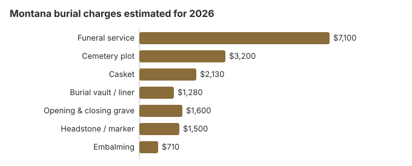

Burial Costs in Montana (2026)
Three numbers anchor a Montana burial in 2026. The funeral service averages about $7,100, a cemetery plot about $3,200, and a headstone anywhere from $500 up to $5,000 depending on size and stone. Once the vault, casket and grave opening are added, our estimate for the whole burial is $15,810 to $20,310. This page also covers Montana's rules on who decides, perpetual care at private cemeteries, county help, winter burials and the veterans cemeteries.
Montana Burial Prices, Charge by Charge
| What you pay for | Montana estimate | Range |
|---|---|---|
| Funeral service | $7,100 | $5,325 – $9,230 |
| Cemetery plot | $3,200 | $1,600 – $6,400 |
| Casket | $2,130 | $710 – $5,680 |
| Burial vault / liner | $1,280 | $800 – $10,000 |
| Opening & closing grave | $1,600 | $500 – $3,000 |
| Headstone / marker | $1,500 | $500 – $5,000+ |
| Embalming | $710 | $500 – $1,500 |
A note on the Montana numbers: they are modelled estimates, not a survey of Montana funeral homes or cemeteries, and not a quote or professional advice. See our method for our approach, and the disclaimer.

With every cemetery fee counted, a Montana burial generally costs $15,810 to $20,310, depending on the casket, cemetery and marker chosen.
Montana Burial Choices
Who Decides on a Montana Burial
Montana lets you name in advance who will make burial decisions. Under MCA 37-19-904, a notarized designation affidavit gives that person priority; without one, the order runs from a military DD Form 93 designee to the spouse, a majority of adult children, parents, siblings and grandparents. Rural counties may have only one or two cemeteries, so get the plot fee in writing early; a cemetery $1,600 above your estimate is a costly surprise. County clerk offices often keep plot fee schedules.
Burial Resources
- Funeral Consumers AllianceNonprofit consumer advocacy for funeral pricing
- Headstone & Monument GuideCosts, types, and buying tips
- Green Burial OptionsEco-friendly and natural alternatives
- Best Online Casket RetailersCaskets bought online often cost less
- Best Burial InsuranceCompare plans to cover burial expenses
Compare Funeral Costs
- Average Funeral Cost in 2026National cost breakdown with real prices
- Cremation vs. Burial Cost ComparisonSide-by-side price comparison to help you decide
- Funeral Cost BreakdownEvery line item explained: know what you're paying for
- Cheapest Funeral OptionsLower-cost alternatives, with typical price ranges
- Direct Cremation: Most Affordable OptionNFDA 2023 median $2,645 with a family-supplied container (latest available)
- How to Compare Funeral PricesStep-by-step guide to getting the best price
Ways to Keep a Montana Burial Affordable
Practical savings for Montana families:
- Ask every cemetery for prices. The FTC Funeral Rule does not reach cemeteries, but most Montana cemeteries will share a price sheet when asked.
- Check winter rules. Some Montana cemeteries, especially at higher elevations, stop opening graves in the cold months and hold the body until spring, so ask what that involves and what it costs.
- Call the county clerk. In much of rural Montana, the fee schedules for town and county cemeteries are kept by the clerk rather than posted online, and they are often lower than private cemeteries near Billings.
- Consider family burial where it is allowed. Montana does not require a funeral director, and in some places a family may bury on private land if local rules permit, which removes the cemetery charges. Check with the county first; our home funeral guide covers the paperwork.
Frequently Asked Questions
What does a Montana burial cost?
Expect roughly $7,100 in funeral home charges plus $3,200 for the grave itself. Then come the casket (about $2,130), opening and closing the grave (about $1,600), a vault (about $1,280) and the headstone ($500-$5,000), for a Montana total of $15,810 to $20,310.
Is a vault required in Montana?
No state law requires one in Montana. It depends on the cemetery: town, county and church cemeteries make their own rules, so ask whether a liner is enough and whether you must buy the container from them.
Private, for-profit Montana cemeteries come under the Board of Funeral Service, and at least 15% of each sale must go into the cemetery's perpetual care trust (MCA 37-19-822). Ask such a cemetery for its written rules and price list, and complain to the Board if it does not follow them.
What is the cheapest burial in Montana?
Direct burial, which leaves out embalming, a viewing and a funeral home ceremony, is usually the lowest-cost burial on a Montana price list. Families may bring a casket from another seller, and the funeral home cannot add a fee for handling it under the FTC Funeral Rule. Veterans who qualify get the plot, grave opening and headstone at no cost in a VA national cemetery such as Yellowstone, near Billings.
How do Montana cemetery prices compare?
Prices differ a lot, even within one town. Rural cemeteries run by counties often charge much less than private cemeteries around Billings, and at higher elevations a winter closing can delay the burial, so ask about timing as well as price.
What is the total for a Montana burial?
Adding it all up, a Montana burial is usually $15,810 to $20,310: about $7,100 for the funeral service, $3,200 for the plot, $2,130 for a casket, $1,280 for a vault, $1,600 for opening and closing, and $500-$5,000 for the headstone.
Is green burial available in Montana?
Yes, where a cemetery has set aside ground for it. Green burial means a shroud or other container that breaks down, no embalming and no vault, so the total is usually lower than a conventional burial. In much of rural Montana no such section exists yet; a standard plot without embalming gets part of the way there, and it is worth asking the cemetery whether it will waive its vault rule.
More for Montana
Montana's removal authorization and county burial rules
In Montana a body may be moved from the place of death only with authorization from the attending physician or their designee, the attending advanced practice registered nurse, the coroner, or a licensed mortician. If that authorization is given orally, it must be put in writing within 24 hours (MCA 50-15-405; checked October 29, 2026).
State law does not forbid burial on private land, so counties write the details. Powder River County's 2016 resolution, for example, asks families to contact the county coroner before a burial, record the grave's GPS location with the clerk and recorder within 10 days, keep the grave at least 100 feet from wells, streams and property lines, and limit a private site to five bodies before it counts as a cemetery. Check your own county's rules before planning a home burial.
Montana's licensing office, county help and veterans cemeteries
Funeral homes arranging Montana burials are licensed through the Montana Department of Labor and Industry; call 406-841-2359 to check one or to complain. Private, for-profit cemeteries also come under the Board of Funeral Service, while town, county and church cemeteries set their own rules.
Montana is not one of the nine states listed by the Funeral Consumers Alliance as requiring a funeral director. A family can arrange a burial itself, with the burial permit in hand and within the cemetery's rules.
A Montana burial can take place once the permit is issued. Cremation must wait 24 hours (MCA 37-19-705).
County help
When a Montana county helps with an indigent burial, it pays the amount it has negotiated with the funeral home, and it may later seek repayment from the estate (Mont. Code Ann. § 53-3-116). (Source: Mont. Code Ann. §§ 53-3-116, 7-4-2924.) A qualifying spouse or child can also claim Social Security's $255 death payment within two years; it is paid to them, not to the cemetery.
Veterans
In a national cemetery, the family of a qualifying veteran pays nothing for the plot, opening and closing, or marker. Yellowstone National Cemetery (406-647-2746) is Montana's VA national cemetery. The state runs veterans cemeteries at Fort Harrison (406-324-4793), Miles City (406-218-2945) and Missoula (406-721-2995), and the Apsaalooke Veterans Cemetery (406-620-3504) is tribal (source: VA National Cemetery Administration).
Montana next steps
- Get the funeral home's General Price List and the cemetery's own price sheet before agreeing to a burial.
- Ask whether the cemetery requires an outer container, and whether it accepts burials in winter.
- If the county may help, ask what it has negotiated with local funeral homes.
- For a veteran, have the DD214 ready and call Yellowstone National Cemetery.
- Report a funeral home that misprices a burial at 406-841-2359.